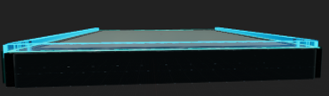

The rift Guardian
What is this project about?
The Rift Guardian is about a person who went through a portal to a strange planet filled with portals. Suddenly,
the person is attacked by aliens coming through the portals.
Now,
the person's mission is to protect the portal leading to the human world.
The game is a VR shooter made in Unreal Engine 5.3 with Blueprints.
Project date: From February 2024 - june 2024
Project duration: 4 months.
Development Team: 24 people.
Engine: Unreal engine 5.3
Programming language: Blueprints

My role & contribution in this project.
I was a programmer for this project, my role was to create mechanics for our game. I made the Player torso, Remote Grab, player Movement and WalkAble .

This is what the torso looked like outside the game. As you can see that it is actually just a torso and not the whole body.
We did it this way because you only needed the torso for the visual affect with the injection.
The torso is a female torso because I agreed that it would be more fun if we were women.
And also because I was 1 of the 2 girls in the group we worked in I wanted to show that there where also girls in the development group.
And also that it is fun for them because you see more visuality in the torso because there were more breasts to see.
at the end we choose to make it hideable in game cause we tought that would be better since the torso was a little to big.
we made the Remote grab so you didnt have too bow in the game to pick a weapon off from the ground or the shop. we also made beam that goes out of you finger tips that will go brighter when you point at a Object that you can pick up. we made that with a raycast


we made this Walkable area so the player could walk in the game and look at other things then only standing around. but we did make a Barrier so the player can not just go of from the area. the only things it can do in the Area is, Going to the shop or hide behind the shelters it has on it. if you try to go tru the boundry you will just get blocked.
.gif)
we made this shelter so you can hide for the Ranged shooter cause if you hide behide it the ranged shooter will shoot on that instead of on you.
and after a few shots it will disapear from the game and after 15 seconds it will be back in the game.
This is the code I have created for the shelter; we are using a health system for that.